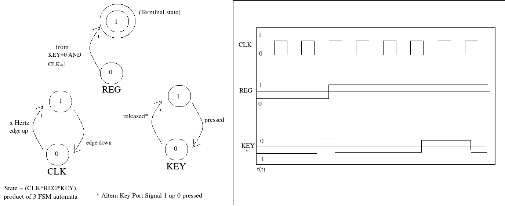
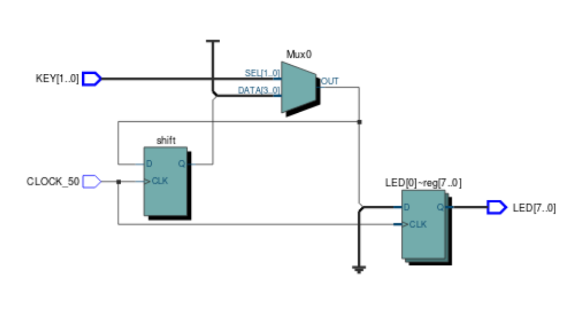

(<-)
REFAL and Turchin's Metasystems
(June 1 19)
Valentin
Turchin was a Russian nuclear physicist who switched departments into
the emerging Soviet supercomputing research program after a sudden shift
in interest to complexity theory, computation and biological
cybernetics. Around 1966 he compiled the beginnings of a data
information-computational notation: REFAL or roughly "Recursive
Evaluation of Functional Algorithms Language". Refal's primary use, like
many artificial intelligence programs of that time, was in machine
analysis of natural language translation during the Cold War. After
attempting to publish the material behind "The Phenonema of Science" in
the Soviet union, under alleged intellectual censorship, he emigrated to
the United States and taught computer science and cybernetics in New
York during the late 70s.
Refal is a very 'pure' function
notation. Implementing a subset of it in Common Lisp teaches a new set
of information processing concepts the same way learning Prolog, or
Haskell, or Lisp for the first time may do for some people. Turchin's supplementary material is an early authoritative body of literature
of advanced compiler techniques, like partial evaluation, evaluation
freezers, and graph structure processing. What I have disovered is that
Refal is also useful for embedding of pure space structures like
semigroups or topologies using extensions of the Refal pattern matching
machine functionality.
The theories of metacomputation, automata
complexity, and advanced discrete and continuous structures processed
with the Refal pattern matching machine are examined in this Common Lisp reference implementation of REFAL in progress.
If you are seriously interested in advanced computational analysis
tools, information representation, or advanced formal automata and
complexity studies, I suggest hand-writing Refal on paper to solve
discrete maths problems as an initiatory exercise. My basic hypothesis,
like Turchin's, is that the Refal notation system may be a more powerful
linguistic metaprogramming (Turchin calls it "metacomputation" or
"supercomptuation") system than Lisp or Prolog, what I believe he has
referred to as "the Flat lambda calculus".
My main takeaway from
this reference implementation brings me back to musings on what I call
the "Programmer's Reader" and natural language semantics and structure
implicit in advanced mathematical or automata notations. In my notes of
the CL Refal repository I have noted small features of Turchin's
cleverness in recursive structure embedding and possibilities for
extension of Refal, like infinite predicate Sentence term sets,
topological representations, and notes on the relation between control
structures in information processing systems and shifts between discrete
and continuous mathematical structures.
REFAL presents a very
"high level" perspective on information, computation, and cybernetic
ontology, and I have still not fully digested "The Phenonema of Science"
which expresses more of what I am seeing in Turchin's clever cybernetic ontologies.
To ground such concepts I like to bring thinking back to the hardware
level, comments like "the Flat lambda calculus" get one thinking about
parallel runtime distribution semantics on Turchin's wild graph parsers,
and in thinking about computational systems I like to muse on like,
what would a physical "dedicated Refal machine" operate like.
A
"Watt" or "Newton" machine we might point to a mechanical automata or
control plant and refer to the formal properties of forces therein, We
have LISP machines from the 80s where data and workflow binds were
represented as Lisp cons cell memory and programs for the architecture
as workstation-compiler, and the Japanese government worked on the so
called 5th-generation logic architectures or "Prolog machines" for heavy
symbolic and fuzzy reasoning. FPGAs were developed largely from
electronic design automation efforts that turned into Hardware
Description Languages, and these are now neuromorphic chips fufilling
old biomimetic hardware prophecies. Still around are the different
Turing and von Neumann machines dominating the commodity computer
ecology crunching mountains of byte strings and pointer playgrounds in C
land. What would a REFAL machine look like?
Biophysics - Part 2. Signal Processing in Biotechnology
(March 28-31 19)
Here
we will discuss techniques for reasoning about biological systems using
signal-processing machines like computers, cameras, and
electrosensitive sensors. I will try to summarize a large and dense
technical background required for some of this work in a short time, I
reccomend reading primary sources from the individuals mentioned, or
looking over related literature I mention at /files.html .
Specification
in language and notation is required for quality and precision in
designs for complex systems. It is common in the anglosphere to hear
something like "Information Theory starts with Claude Shannon's work",
"so and so is the first Pragmatist", "so and so is the first
Semiotician" yadda yadda, but really the analysis of information, codes,
and language is an ancient discipline. The visual proofs shown by
Euclid are the precursors to the kind of material discussed in "Perceptrons" or any other work on computational geometry influencing our work in signal processing here.
Modern
structural analysis of language has its roots in syntactic grammar a la
Chomsky's "Syntactic Structures", among other systems including
logical-semantic theories, including that of the pragmatists like
Charles Sanders Pierce who emphasized functional inference. Shannon's
information theory stands along with Wiener's cybernetic equations, and a
long history of contributions from theorists like Laplace, Leibniz, and
Descartes. For various reasons I argue that Descartes is the first
modern cybernetician.
I mention Natural Language and Logical
theorists like Chomsky, or Sanders, or Russel first, because they have
heavily influenced the development of many expert systems, robotic
drivers, and intelligent operating systems. Books like "Cognitive
Science", Stillings or McClelland's work on Parallel Distributed
Processing will often include snippets of Lisp source code defining
declarative statements similar to natural languagement sentences or
clauses, or defining clusters of neural weights in parallel simulations.
Furthermore, automated reasoning systems for natural language
information environments is something I professionally work in, so I can
offer many useful resources, literatures, and codebases already built
in this domain.
Relations between different forms of logic and
language have been specified, usable by different tools, like the fact
database and deductive inference system Prolog: a programming language
inspired from Carl Hewitt's demonstration of Planner at a logic
conference in Scotland, programmed in John McCarthy's Lisp which he
developed to automated algebra and logic investigation, which was
modeled after the cell memory model of IPL developed by Herbert Spencer
the decision theorist and logician who started the field of symbolic AI.
It
may seem odd to the average signal processing or machine learning
engineer to begin an article on signal processing with a rant on
symbolic AI and linguistic logic. In my experience modeling complex
runtimes or physical systems I have found that in any design or code
specification, the language should be a clean mapping from natural
language statements containing conditional predicates for geometric or
algebraic spaces. Automation of testing or common workflows becomes
trivial, and type checking of operations or procedures is empowered by
strict logical semantics. I should emphasize that this not an
endorsement of strong typing: natural language clarity is not a problem
of strong typing or whatnot, but an issue of dynamic knowledge
representation. The titanic volume of relations between objects of study
in biology makes formal relational modeling attractive to a domain
developer.
Different computer implementations of advanced
information systems like Lisp or Prolog or Datalog or TLA+ or PLANNER
specialize in some set of strategies and scope in logical problem
solving and automated reasoning. All this talk of high level languages
may annoy the seasoned embedded signal engineer using C/C++, assembly,
perhaps a scientific matlab for modeling. Issues of optimization are
something I never worry about as it is very easy to compile from
languages like Lisp or Prolog to C, or even VHDL and hardware modules.
The
two unrelated signals we will be processing will be an MPEG4 file
streamed frame-by-frame as a virtual video device from a camera feed,
and a proprietary formatted 1-dimensional signal from an NMR machine.
Computer Vision Biomechanics
Our
primary goal with processing video input for biomechanic analysis is to
spatially track forces of the body with reference to the ground, and to
build and maintain a knowledge base extracted from the video pixel
matriced stream recorded over time. In terms of code, this means
producing a library in Common Lisp and Prolog for processing linux video
devices.
The knowledge base will begin storing and analyzing the
frame pixel information. The video stream, converted into an MPEG4
file, be divided into all of its frames, each frame converted into a
pixel matrix and stored by time label. Pixel hue and value deltas for
every 2-permutation through the frame set is calculated and stored. So
that we don't cheat and rely on color methods instead of spatial ones
(for now) in tracking, we strip the hue and flatten the colors to a
single brightness value.
With the perspective frame and the
motion tracking information we begin building a vector model of body
kinetics. Among other code requirements I want to display individual
frames, stacks of frames, filtered maps, and weight graphs in PDP
models, so I have both html and native SDL gl outputs of graphics
buffers, using primitive windows for things like layer filters in image
processing. With a pyramidal neural network model (see Tanimoto 1990) I
can map the activation of relations over the space of hierarichal areas
of an image, starting with a large quadrant, down to sub quadrants of an
image, etc, and relations in a network between different properties of a
frame or the whole signal stream. With this I will protoype a dataflow
model whose codebase is the neural network, which can then be optimized
in hardware or a more low level language.
We want to find stable
reference information, a stable background and camera placement will do
in the case of gait analysis, and for any image motion processing a
perspective frame is calibrated. Clustering on deltas between frames for
outlier patterns helps us find where values were stable (background)
and erratic (something passing through). For some threshold of change,
we set a mask to identify areas of faster motion. Our goal is to assign
displacement and acceleration to trackable parts of the moving objects,
some stable information passing from one point in perspective to
another.
see the work in progress at the biolog repository,
as of the night of March 30th I am working on working on importing mpeg
frames into the sdl window and sketching out a pyramidal network model
with graphical methods for the biolog sdl context, which will allow it
be a kind of dataflow prolog for biophysics analysis.
Biophysics - Part 1. Analysis and Affordance
(March 25 19)
Most systems are, or interact with, biological ecologies including organisms and their waste products or constructs.
Professional
disciplines concerning analysis of the human body have built a dense
history of anatomical and mechanical research. The ancient Egyptian
surgeons and the greek doctor Aristotle wrote treatises on biomechanics
like "De Zoon Kinesis" (On the Kinetics of Animals) and sacred maps of
the human organs for burial.
Biophysics finds different
approaches in varying cultures. Western analysis finds its origins in
Cartesian geometry, Newtonian physics, fluid mechanics, and ancient
Greek natural philosophy. Archaic gymnosophic practices and Dharmic
disciplines emphasize breath control and interoceptive awareness.
Embodied practices like Yoga or Zen buddhism re-program neuromuscular
conditioning and plasticity.
Modern technology augments and
extends the body's many sensors when as interacts with local and
non-local ecology. Scale is essential in precision analysis of
biological systems, and larger objects become easier to study as they
shift towards the macro scale of visiblity. From here, macro-moleculed
polymers become visible only with microscope analysis, though emergence
structures such as crystal lattice geometries may become deducable
through macro patterns.
Detectable phenonema are key in
fast-paced experimental and developmental science. Reactions in
biological systems may be drastic, violent, and fast acting. The
macro-scale visible phenonema visible within organic material, and the
low cost and barrier of production in many organic substances or species
makes stable biomechanic design an attractive challenge to a hardware
engineer.
Biomechanic analysis has provided affordances in the
fields of athletics, military science, robotics, medicine, ergonomics,
and evolutionary biology. Biomorphology has produced results in
electrical engineering and information theory, biomimetics offering
inspiration for designs like artificial neural networks, quoruum sensing
in distributed systems, and biomorphic automata. Presently the author
consults on research in cognitive biology and organic materials, and can
vouch for it as a lucrative industry. To illustrate some basic
affordances biophysical tools offer to an individual, we will start with
introductions to gait analysis and biomagnetism.
The tools this
blog will document over the next week or so will showcase methods of
biomechanics at many levels: nuclear-magnetic spectral analysis of
organic matter, video signal-processing of skeletal mechanics, and
formal methods in morphology and ecology at the high level. In keeping
with useful practical texts like Stephen Vogel's excellent biomechanics
books like "Life in Moving Fluids", accurate DIY procedural and material
information will be included to construct your own experimental tools.
Shameless Plugging
(March 21 19)
To
set aside time for independent hardware work and publishing I am
calling for patrons in exchange for gifts and early free literature.
patreon.com/bayoumech
Here
I'll keep progress on projects updated. You'll get early access and
possibly artifacts from research and development in biofeedback
hardware, affordance experiments, and precision scientific systems.
Automata Algebra - Part.2 Continuous Automata (Work In Progress)
(February 8-(Ongoing) 19)
Here
the discrete automata model demonstrated previously will be extended to
continuous domains, analyzing three continuous sytems: orthography,
semiconductor circuits, and human biomechanics.

hydrodynamics I've captured with Boku Undo marbling ink and a filtered cheap digital camera
I find brush pens useful because they are gentler to hold and
leave marks more distinctly and with higher economy than pencils or
pens. This is an ink brush pen (붓펜) from the South Korean company
Monami, it is easier to manipulate and model than a hair tip brush as
the pen brush tip is a single flexible foamy piece instead of many
fibers.


Held against a drawing medium a flat ellipsoid plane of ink is
deposited according to the angle of the pen to the paper, the distance,
pressure, and trailing direction of the flattened brush tip. Observing
the geometry of strokes against the metered grid of the paper is
insightful. The coordinates and kinematics of the brush pen are in
reference to some actuated holder, like a human or robotic limb. The
current amount of ink on the medium is the summation of all ink
depositions over time.
(working on v4linux/opencv (see
old burrow code) capture tool for video analysis of posture-hand system
for human biomechanics section)
The object of
most digital computation is fundamentally physical crystalline
structures in particle geometries, runtimes, and other discretely
ordered system facets. The regular atomic ordering of semiconductors
like Silicon give rise to their use in transistors for switched
circuits. Digital synthesis being a well developed field reaching limits
in architecture design (see ACM paper 1985 "The Connection Machine"),
for continuous automata studies let us start with the semiconductor
properties of silicon and see how automata algebra can help us reason
about semiconductor circuits.
(A cave cavity formed quartz crystal from the Natural Museum of Houston collection)
For hands on design and testing we'll setup a simple crystal
oscillator for a continuous signal source and tune electrostriction
control with the ports of the Intel FPGA. (WIP)
Automata Algebra - Part.1 Digital Systems
(Janaury 30 19)
Automata
theory has deep ties to Group theory through the relation between
semigroups and state machines. However, highfalutin theoretical
approaches require motivation in implementation. Why higher level
algebraic automata techniques? The theory is necessary for
supercomputation as it defines calculating boundaries of systems given
space and time limitations, and provides an algebraic framework for
discrete analysis of virtual and physical systems in transition.
To
demonstrate the utility of algebraic automata theory in hardware and
complex system design, a simple translation of a desired time-dependent
switching circuit from a signal graph to a composition of automata will
be mapped and implemented in a live hardware system, an Intel FPGA. We
will pick apart the relations among signals and register memory in a
digital circuit and come up with a formal model for a simple stateful
binary circuit, and later demonstrate how complex systems can be built
robust from simpler ones in continued composition of system hierarchies.
Consider a digital circuit to switch a binary memory register on interactive input, the system has the following signals:
CLK - a x MHz clock signalling 1 on every rising edge every x Mhz and 0 when not
KEY - an external asynchronous binary input key (button) signalling 1 when up and 0 when pressed
REG
- a binary Register memory initialized at 0 and set to 1 (showing
light) when KEY is pressed (KEY=0) on a clocked rising edge (CLK=1)
The
behavior is described as the following: all lights are off until a key
is pressed, where a single LED register turns on (REG = 1) and stays on
for the rest of the machine runtime in this terminal state. The signal
set will be declared initially (CLK=0, KEY=1, REG=0) for the clock, key
input, and binary register memory of the LED switch accordingly.
We
first treat each signal as a seperate automata, S_a = (CLK_a, KEY_a,
REG_a) is the set of automata for each signal. CLK_a has the states 0
and 1, transitioning in a cycle every so n Hertz. KEY_a has the states 1
for unpressed and 0 for pressed down, transitioning from 1 to 0 via an
actuated pressing, and from 0 to 1 by releasing a key, REG_a is the 0
off and 1 on of the register memory of the LED switch, whose transition
we will discuss in a bit.
As the state space of each automata is
binary (clock up or down, key down or up, register memory 0 or 1),
graphing the finite state machine of each is trivial, labeling the
transition edges for causation is insightful, the state of each automata
is the (binary, [0,1]) value of the signal at some uncorrelated time
f(t). We would like to know how the system behaves.
Because the
Register memory has been described as turning to 1 when the Key = 0 on a
clocked rising edge (CLK = 1), the next composition of automata states
becomes (CLK=...,KEY=..., REG = 1) when REG_a transitions to state 1
from 0 after the KEY is pressed, for a period right before and after the
3rd rising CLK edge of the graph below.

We
say REG is Dependent on CLK and KEY (a key being pressed on a clock
edge up) for transitioning on a 0 value KEY signal during a CLK=1. In
the graph automata model of REG, we can label the transition edge with a
logical Predicate for implication from KEY=0 AND CLK=1, and I think
automata with state transitions labeled semantically by logical
Predicates (all predicates of transitions defining a consistent model of
a valid runtime), merits its own study as a dynamic proof theory. Note
the timing of KEY's transitions may happen before and after a CLK rising
edge, at some Real valued time t instead of the discretely timed clock
rise, and that this Real t value is not, other than in an implicit modal
temporal inequality, reflected anywhere in the state machine models on
the left. Note also that a Real continuum can be defined on each signal
line as well, REG may well be 0.8 or 0.1, or edged to 0 or 1 from a
neural threshold function.
Since REG_a's state set partitions
the state space of the entire machine runtime, being either off 0, or
finally turned on 1 forever, all states of the system are subsets of
these partitions, and similarily CLK partitions the state space into
points on and off rising edge timings. The CLK_a transitions in a
working machine runtime are defined as cyclic, moving between 0 down and
1 on a rising edge on repeat.
The first dependency of REG is the
high edge of the clock CLK=1, but more essentially that the transition
on REG_a from 0 to 1 requiring transition KEY_a from 1 to 0 defines the
second dependency and defining dynamic property of the system. The KEY_a
transition from 1 to 0 is from an uknown external source as some uknown
time, and may occur or never occur, initialized at 1 for unpressed on
the DE0-Nano. Adding more input ports to the system similar to KEY would
increase the product size of relations among signals, more state
machines for each port, and thus a larger state space.

^ here REG is labeled "shift"
The
resulting VHDL synthesized from the composed state machine model
produces the above RTL schematic for implementation in digital circuits.
On my physical Intel DE0-Nano fpga board, the simple but usefully
demonstrative specified switching runtime works exactly as modeled.
Characterizing
the defined digital hardware circuit runtime signals as a simple
composition of binary automata allows for easier semantic
characterization of transitions in systems, which may become more
dynamic in size as the state space grows. State spaces like the REG or
CLK in the example above help partition the system into useful
subspaces. Lastly the runtime can be characterized verbally, as having a
state memory of whether or not the key is pressed at least once,
something like the predicate function 0 if untouched and 1 if pressed. I
am considering working with predicate functions on transitions in
describing dependent dataflow automata.
Here we've analyzed the
simplest possible stateful interactive digital system in terms of
component state machines. In part 2 of this post on automata algebra, we
will explore state space expansion as register byte size and operation
combinations increases with higher memory and functionality, the utility
of deterministic real-time computing machines in science, the relation
of group theory to automata theory, a similar example for
continuous-valued automata machines, and Valentin Turchin's metasystem
automata model of biomechanics.
reading "Computational Physics" by Newman
Clockbound Dataflow Architectures
(January 29 19)
On
the average "scheduled" operating system using virtual memory, input
and output latency can take up to minutes on workstations. In dataflow
architectures, a blank buffer array is stored, and parallel buffer copy
writes/reads can be near-instant. Synchronization of whole data
operations on a discrete clock time provides the most fluid feedback to
the user and system. Optimizations can be microcoded at the byte
transfer level. Many real-time industrial systems use similar custom
architectures, as response time is key in physical operations and
actuator control.
reading "Digital Systems" by Tocci, numeric computing on a 50Mhz fpga
Biology and the Cost of Computation
(January 28 19)
Automata
theorist John Rhodes defined an organism as a sequential machine that
has to compute its survival in real-time. The exchange of matter and
motion which require the metabolic processes of cells to live require
extremely low energy compared to human engineering, consider for example
the efficiency of plants in the conversion of C02 to 02 in generating
cheap sugars and human technological attempts at the same.
The
survival strategy of small animals aims for higher mechanic return on a
small body mass, hiding from larger predators through evasion, silence.
Often their reproduction strategy is higher fertility, requiring less
resources to multiply on surpluses of organic material to consume. It is
no surprise that the oldest and most populus living beings are
microorganisms. Metabolism at this scale may in parts involve very small
numbers of electrons being exchanged in some cycle. Processes in
machines engineered by humans require much more fuel or electricity to
operate, the US house mains is around 120V.
As organisms and
machines compute their survival in realtime, they compute their
environments in real time, rather, they and their environment are
computed in interaction. Among the most successful species like hominids
and fungi have learned to isolate parallel processes around them and
gain from the evolutionary adaptations of their distant or dead cousins,
from tool making from animal parts or the synthesis of alkaloids and
surplus of carbon in dead matter. Organisms in ecology die and consume
in parallel through space as flows of material and motion proliferate.
I am playing with low-voltage dataflow computing with mycelium grown
on agar, the local area has a rich diverse mycology available but
repeatability is needed for sourcing.
reading "Chemical Kinetics" by Laidler, and "Physical Hydrodynamics" edited by Guyon et al
PL and HCI Design Motivation for a Symbolic Algebra Language
(January 3 19)
I
see Common Lisp as as kind of s-expression assembler macro language
closer to C than Haskell, types like those created by (DEFTYPE ...) are
compiler optimizations not checked/inferred as all major CL
implementations do not offer static function analysis, therefore it is
more possible that compiled programs do not run correctly.
However what CL implementations like SBCL do offer is a dynamic
development environment, the most useful features being a REPL and saved
Images. In Lisp, Images are memory saved databases for a Lisp session
storing variables, compiled functions, and loaded libraries. Since all
functions are Symbols, Constants, or s-expressions, and s-expressions
can be composed from lists of s-expressions: metaprogramming
functionality for inspecting or defining control structures is easy.
Given the language is S-expression homoiconic for all types and
subroutines, inspection, destructuring, and building of Lisp programs is
trivial given an intelligent compiler. Operations like pattern matching
are trivial to implement and clean to read and edit. The program's
source and runtime image becomes its database. For these reasons Lisp
was the most popular language for Expert Systems and early Artificial
Intelligence development, and in fact many early functional and logic
languages like PLANNER and Prolog were implemented in it.
Features I would like from both Common Lisp and Haskell in a new language and dev environment:
From Common Lisp : dynamic REPL and interactive Expert Shell, Image
with Symbol Table, Metaprogramming and evaluation, adaptable Symbolic AI
and Expert System development, robust and flexible Emacs IDE and
Debugging integration
From Haskell : Strong Static Algebraic
Types, Program Verification, Compilation stability and debugging ease
from Static Analysis
Biomechanics and Affordance
(January 2 19)
I have started implementing HADES,
a computer algebra and expert system in Haskell, a basic production
rule based constraint solver algorithm is being documented in
/doc/design.txt
Hades will be used initially to input, store,
instantiate, and solve kinematics systems of equations, and to act as a
database for Biomechanics models, which I am learning kinematics and
mechanics for.
Biomechanics, or Physical Science, or
Performance Science, is the mechanical study of biology and bodily
kinetics, usually more specifically human performance under composition
and constraints. Its main use is in sports medicine, forensics, and
performance science : it is interesting to note it as an empirical
science where self-reporting is usable information. A good text I am
currently reading is "Comparative Biomechanics" (2003) by Steven Vogel.